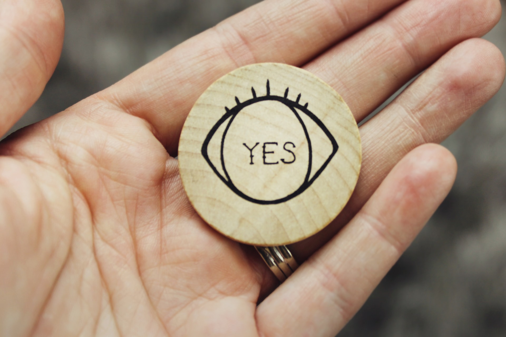
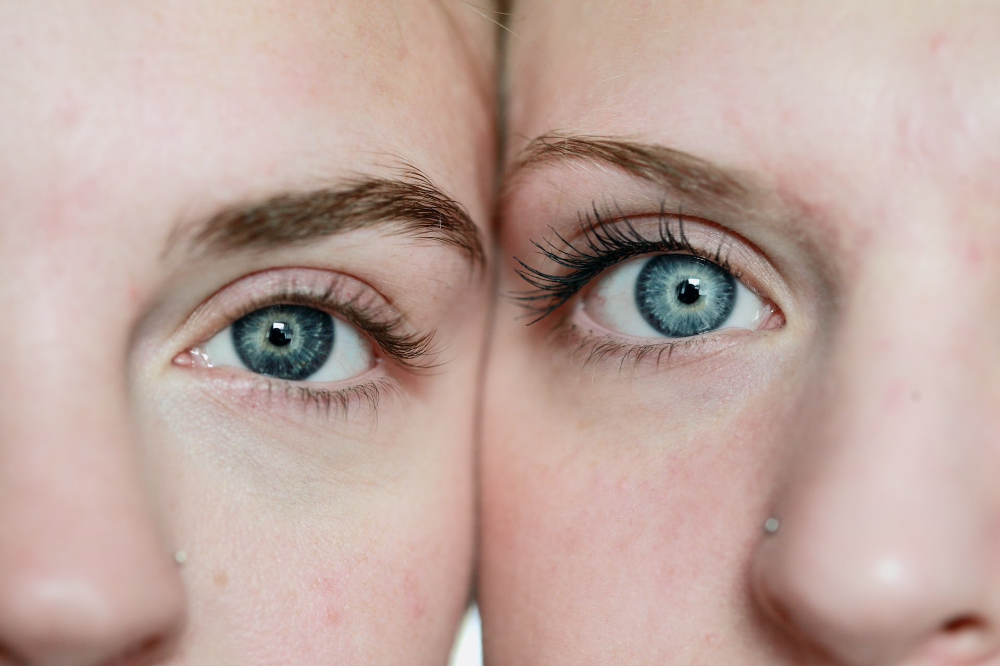
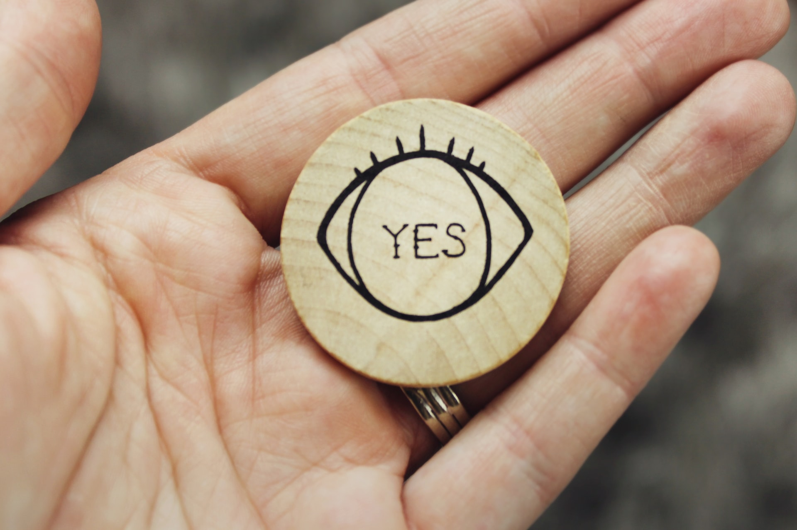
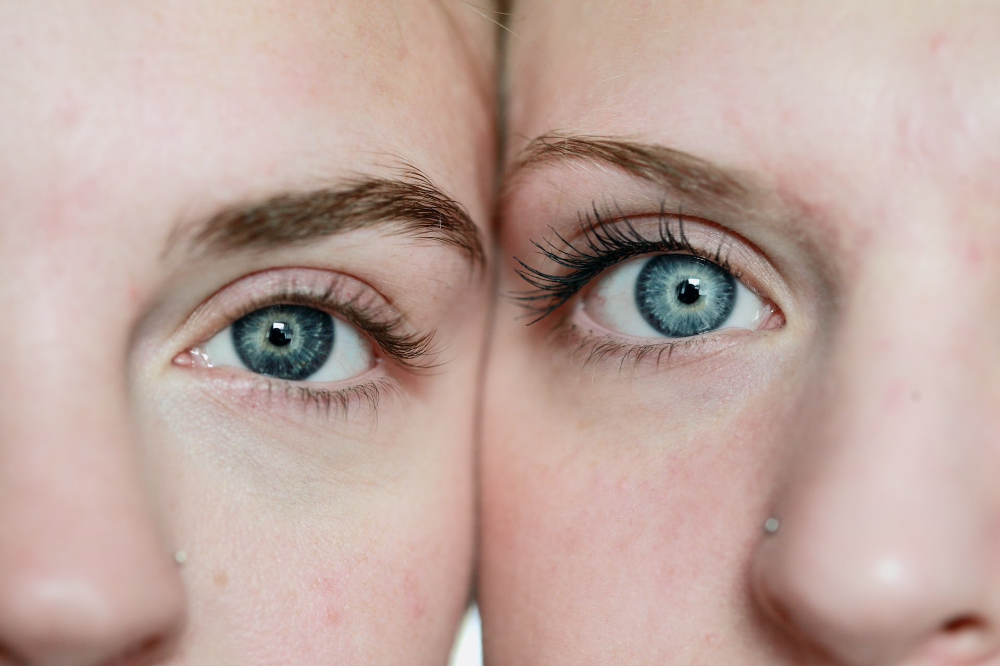

NUESTROS CURSOS
Con nuestros cursos aprenderás todo lo que necesitas para dar un servicio ético y de calidad profesional, no solo logrando resultados que van a marcar la diferencia, sino también aplicando los recursos prácticos por excelencia que te servirán para iniciar tu propio emprendimiento. Tenemos preparado material informativo y capacitadores experimentados que podrán acompañarte y guiarte durante la capacitación que consta de dos partes cruciales dentro del aprendizaje: la teoría y la práctica. ¡Si!, como leíste, en nuestros cursos ofrecemos la asistencia simultánea y oportuna con la que podrás resolver las dudas que surjan y corregir las malas prácticas para que no tengas que empezar por tu cuenta, sino de nuestra mano. ¿Qué aprenderás? Diversas técnicas para la estética de cejas y pestañas. Hay que destacar que son procedimientos maravillosos que tienen una amplia salida laboral. El estudiante tendrá todas las herramientas de conocimiento con la última actualización en aplicación de pestañas, lifting, perfilados,depilación de cejas; y todo lo más usado por los clientes de todo el mundo.
Extensiones de pestañas pelo por pelo
Hoy más que nunca la mirada juega un papel muy interesante en el mundo, ya que con la llegada de la pandemia y el uso de barbijos las extensiones de pestañas se han convertido en un plus especial para la definición de los rasgos faciales. Con un adecuado servicio se pueden obtener grandes resultado en la construcción de una mirada distitiva; además de colocar las pestañas pelo por pelo con un diseño armónico, adaptado a cualquier tipo de rostro.
Tipos de extensiones de pestañas
Visión Natural
Son las más naturales y se les reconoce como efecto rímel también. Las pestañas postizas más naturales son aquellas que intercalan pelos de diferente longitud, ya que imitan la textura natural de las pestañas y hace que se integren perfectamente. No se verán “perfectas” ni simétricas, y eso hará que el resultado sea mucho más discreto.
Híbridas
Son la combinación ideal entre las pestañas visión natural con el volumen 2D. Estas extensiones son recomendadas para aquelas que desean resaltar la elegancia en una mirada.
Volumen 3D
Estas extensiones son un poco más llamativas e imponentes, realzan tu mirada dándole más profundidad. Es nuestro volumen intermedio y uno de los más demandados por clientas de todas las edades. Son pestañas que dan muchísimo juego para crear distintos diseños, más naturales y densos o más largas y voluminosas.
Volumen Ruso
Como siempre están quienes les gusta lo llamativo y al limite de lo excéntrico, ofrecemos éste tipo de pestañas que son utilizadas por mujeres únicas que buscan marcar la diferencia. Se pegan abanicos de cinco extensiones más finas a cada pestaña natural. Con ellas consigues una mirada exuberante, fuerte y sensual.
Lifting de Pestañas y Keratina
En este curso aprenderás la técnica de lifting y también te enseñaremos a aplicar la Keratina para que tu trabajo sea eficiente y cuidemos mucho las pestañas de nuestra clienta. También te enseñaremos a tinturarlas con henna para un resultado efecto maquillaje.
Microblanding
Es la técnica más novedosa en maquillaje semipermanente. Es ideal para reconstruir, definir o tupir las cejas. El proceso es completamente manual y artesanal, ya que se dibuja pelo a pelo, logrando así que las cejas luzcan completamente naturales. Está indicado para personas que desean darle forma a sus cejas y rellenar espacios vacíos por excesiva depilación ó algún tipo de alopecia.
Diseño y perfilado de cejas
¡Las cejas son el marco de la mirada! El diseño y perfilado de Cejas es una técnica de depilación que consiste en darle la forma correcta a las cejas respetando la forma natural de la misma. Se tienen en cuenta diferentes factores: forma natural de las cejas, tipo y cantidad de pelo, forma de ojos y de rostro. Los beneficios de un buen marco para tus ojos son inmediatos. Resalta, rejuvenece y levanta la mirada. Mejora la simetria de las cejas. Genera un efecto lifting. Suaviza rasgos. Lo ideal para mantener el diseño y no perder la forma es hacerlo aproximadamente cada 21 días que es el ciclo del crecimiento del pelo. Es simple y rápido. Conviertete en un especialista para tratar las cejas adecuadamente y con el mejor enfoque posible.
Nuestros Productos
Adhesivos y removedores
Repuestos
Pinzas
Pestañas
Limpiadores
Kit de cuidado profesional
Galería

 


